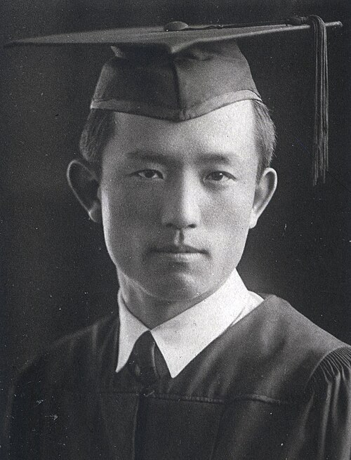

1회차 · 시인

1941년 연희전문 졸업 사진 · 퍼블릭 도메인 (위키미디어 공용)
1917
북간도 명동촌에서 태어남. 사촌 송몽규와 함께 자람
1938
서울 연희전문학교(지금의 연세대) 문과 입학
1939
「자화상」 — 22살
1941
「서시」 — 시집을 엮으려 했으나 내지 못함
1942
일본 유학, 도쿄에서 「쉽게 씌어진 시」
1943
독립운동 혐의로 체포
1945
2월 16일 후쿠오카 형무소에서 숨짐. 광복 여섯 달 전, 27살
1948
남은 원고로 『하늘과 바람과 별과 시』가 나옴